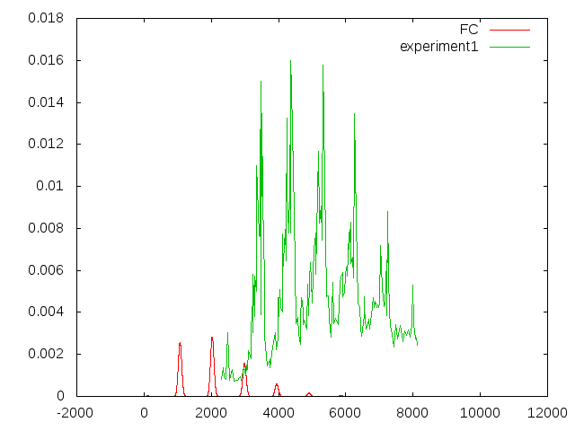
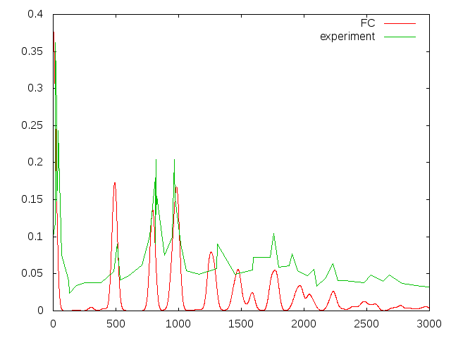

Test-Systems for Visper
Table of contents
Acrolein
The calculations on Acrolein have reference data obtained with G09 directly.
anisole
The FC-spectrum obtained with Visper is shown in the figure below
where the lower picture is a reference with theoretical spectra above and in the lowest panel experimental reference, taken from Julien Bloino et. al., THE JOURNAL OF CHEMICAL PHYSICS 128, 244105, 2008.
benzene
For benzene there are some calculations for triplet-state to be done.So far, I have calculations based on B3lyp and LC-Blyp:
sources for exp. data:this one and that one.
phenol
The figure below shows the absorption spectrum of phenol. Except for the bad resolution of the reference data chosen here, the peak position is well reproduced and also the relative heights are in good agreement. source of experimental reference.